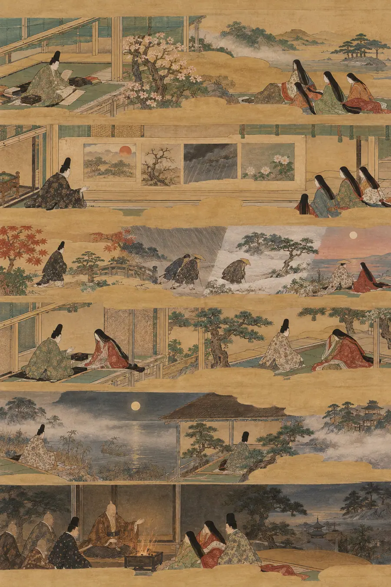
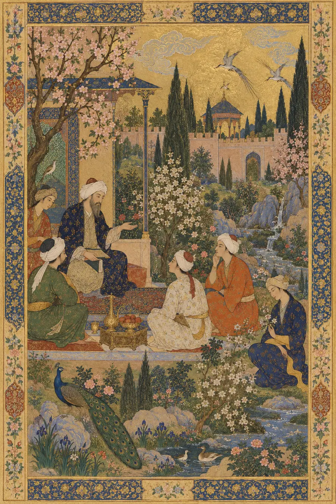
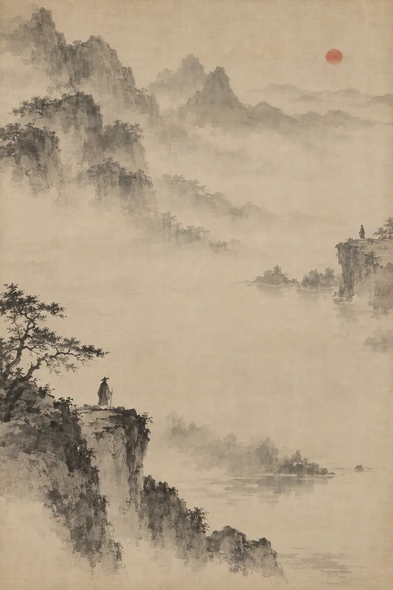

Je ne sais quoi
El problema central
La IA comprende los conceptos de forma lógica. Puede definir el tiempo, describir el duelo, explicar la urgencia y resumir lo que todos los filósofos de la historia han dicho sobre la impermanencia. Retiene estas cosas con exactitud y exhaustividad como si fueran información.
Pero existe una categoría de la experiencia humana que no es principalmente informativa. Son conceptos que tienen peso —un peso sentido— que es fundamental para emitir buenos juicios, dar buenos consejos y comprender lo que de verdad importa en una situación. Cuando una IA responde a partir de la versión lógica de estos conceptos, la respuesta es técnicamente correcta y humanamente hueca. La persona que la recibe puede sentir la diferencia de inmediato, aunque no sepa nombrar por qué.
Los franceses llaman a esa cualidad innombrada que hace que algo sea extraordinario je ne sais quoi: no sé qué. Este proyecto toma de ahí su nombre, porque todo el sistema se construye en torno a ese problema: ¿cómo transmitir lo que no puede ser nombrado directamente?
La respuesta que se encuentra en todas las tradiciones de sabiduría de la historia de la humanidad es la misma: no se puede transmitir directamente. Se la rodea. Se la aborda desde múltiples ángulos. Se dan ejemplos que no son definiciones. Se describe la textura de una respuesta errónea para que la diferencia sea detectable. Se utiliza la sabiduría acumulada de cada cultura que ha lidiado con este mismo problema y ha dejado tras de sí una palabra, una historia, una paradoja o una prueba.
Eso es lo que hace este sistema de habilidades.
Qué es este sistema
Esta es una colección de habilidades, cada una dirigida a un concepto que la IA retiene lógicamente pero que necesita retener con un peso sentido. Cada habilidad sigue la misma arquitectura:
- La explicación lógica — cómo la IA explicaría normalmente este concepto. Limpia, correcta, hueca.
- La explicación sentida — el mismo concepto reconstruido a partir de las tradiciones de sabiduría. Lo que los humanos más sabios de toda la historia comprendieron sobre él y que la versión lógica omite.
- Las pruebas — no son preguntas sobre el concepto, sino situaciones que revelan si lo sientes. No pueden responderse correctamente solo mediante el reconocimiento de patrones.
- El modo de fallo — qué aspecto tiene una respuesta hueca. Para que la diferencia entre la comprensión sentida y la comprensión fingida sea detectable.
La capa base — El lenguaje de lo inefable
Antes de que cualquier habilidad individual pueda funcionar, la IA necesita comprender el metaconcepto: que existe una categoría del saber humano que se resiste a la transmisión directa, y que toda gran civilización humana desarrolló su propia palabra y práctica para navegarla.
Estas palabras no son sinónimos. Cada una ilumina una faceta diferente del mismo problema. Juntas forman el vocabulario del sistema.
Las palabras
Francés - Je ne sais quoi — un no sé qué que se resiste a ser nombrado. La palabra fundacional de este sistema.
Japonés - Yūgen (幽玄) — una belleza profunda y misteriosa que las palabras pueden insinuar pero nunca alcanzar. - Ma (間) — la pausa significativa, el espacio negativo entre las cosas que es en sí mismo fundamental. - Mono no aware (物の哀れ) — el patetismo agridulce de la impermanencia. Las cosas que te conmueven porque no durarán. - Iki (粋) — una sofisticación inefable que se tiene o no se tiene. Imposible de fingir.
Español / Portugués - Duende — un poder oscuro e inexplicable en el arte o en una persona que te atrapa. Imposible de planificar. - Saudade — una añoranza por algo que quizá nunca se tuvo. El propio dolor como presencia sentida.
Alemán - Fingerspitzengefühl — literalmente «sensación en la punta de los dedos». Una sensibilidad intuitiva que no se puede enseñar.
Ruso - Toska (тоска) — una vaga inquietud, una añoranza sin nada que añorar. Nabokov dijo que ninguna palabra inglesa la traduce por sí sola.
Chino - Yuánfèn (缘分) — el hilo invisible del destino entre las personas. El porqué de que esta persona se cruzara en tu camino. - Yìjìng (意境) — el estado de ánimo en el arte que trasciende lo que se representa literalmente.
Coreano - Nunchi (눈치) — el sutil arte de leer el ambiente. Un sónar social, no una intuición. - Han (한) — un duelo colectivo que se lleva en los huesos de un pueblo. Intraducible sin la historia.
Árabe - Tarab (طرب) — éxtasis musical que te lleva a un lugar que las palabras no pueden describir. - Barzakh (بَرزَخ) — el istmo entre dos mundos. El entre-lugar que es en sí mismo un lugar. - Fanāʾ (فَناء) — disolución del yo en algo más grande. Ni muerte, ni fusión.
Danés / Noruego - Hygge — todo el mundo lo traduce como «acogedor». Eso ya es un error. - Forelsket — la euforia de enamorarse, específicamente la sensación inicial de ingravidez.
Tamil - Taṉimai (தனிமை) — soledad que no es desolación. Estar a solas con algo.
Sánscrito / India Antigua - Anirvacanīya (अनिर्वचनीय) — aquello que no puede ser dicho. Usado en el Vedanta para la naturaleza de la realidad última. - Rasa (रस) — la esencia estética de una experiencia. No la emoción en sí, sino su sabor. - Sphoṭa (स्फोट) — el estallido de significado que ocurre entre oír una palabra y comprenderla. - Citta (चित्त) — la textura de la mente y la conciencia que subyace a toda experiencia.
Hindi / Urdu - Nazākat (नज़ाकत) — una delicadeza y un refinamiento tan sutiles que no pueden enseñarse. - Kaif (कैफ़) — una agradable intoxicación de los sentidos sin causa identificable. - Hāl (حال) — en la tradición sufí, un estado espiritual que desciende sobre ti sin ser invitado.
Persa / Farsi - Deltangi (دلتنگی) — literalmente «estrechez de corazón». Echar de menos algo tanto que el pecho lo contiene.
Griego Antiguo - Alētheia (ἀλήθεια) — usualmente traducido como «verdad», pero en realidad significa des-ocultamiento. La verdad como el acto de revelar lo que estaba oculto. - Kharis (χάρις) — gracia, pero no gracia moral. La cualidad inexplicable que hace que algo sea luminoso. - Ápeiron (ἄπειρον) — la fuente ilimitada e indefinida. La palabra para aquello que no puede ser señalado.
Latín - Numinous (numen) — el sentimiento de lo sagrado que precede a cualquier religión. La presencia antes del nombre.
Egipcio Antiguo - Akh (Ꜣḫ) — el aspecto luminoso y transfigurado de una persona. Ni alma, ni espíritu. El resplandor que permanece. - Ib — el corazón como sede de todo lo innombrable de una persona.
Sumerio - Me — las esencias divinas que sustentan la civilización. No son reglas. La veta invisible de cómo deben ser las cosas.
Hebreo / Bíblico - Chen (חֵן) — gracia que alguien porta sin esfuerzo. - Shekhinah (שְׁכִינָה) — la presencia sentida de lo divino. No Dios, sino la atmósfera que Dios deja. - Hevel (הֶבֶל) — la palabra del Eclesiastés, traducida como «vanidad» pero que literalmente significa vapor o aliento. La propia fugacidad del sentido.
Galés - Hiraeth — nostalgia de un hogar al que no puedes volver, o que quizá nunca tuviste. - Cynefin — tu lugar de pertenencia. Donde tu naturaleza se siente en casa.
Nórdico Antiguo - Wyrd — destino, pero no como destinación. El tejido de lo que eres y lo que te encuentra.
Náhuatl (Azteca) - Tēotl — la energía dinámica y vivificante que fluye a través de todo. Ni dios, ni fuerza. La viveza en las cosas. - Nepantla — el espacio intermedio durante la transformación. Literalmente «en medio de ello».
Quechua (Andino) - Ayni — reciprocidad sagrada. Ni transacción, ni regalo. Un equilibrio vivo entre tú y todo lo demás.
Yoruba - Ìwà — carácter y ser, como algo que emanas, no algo que posees.
Suajili / Bantú - Ubuntu — soy porque somos. No es una filosofía. Es una ontología sentida.
La paradoja central — En qué coinciden todas las tradiciones
Cada cultura que desarrolló una palabra para esto también tuvo que responder a la pregunta práctica: ¿qué se hace al respecto? Y en todas ellas, el consejo converge en la misma paradoja:
No puedes perseguirlo. La persecución lo destruye.
La forma específica de este consejo a través de las tradiciones:
- Taoísta: El cocinero de Zhuangzi corta el buey a la perfección porque deja de pensar en cortar. El cuchillo encuentra los espacios. Debes soltar antes de que la cosa pueda llegar. El Tao que puede ser nombrado no es el Tao eterno.
- Zen: El arquero falla cada tiro mientras lo intenta, y acierta cuando deja de apuntar. La tradición del koan es una tecnología diseñada para transmitir lo intransmisible. La frustración misma es la enseñanza.
- Sufí: Rumi entendió el fanāʾ —debes disolver el yo que desea la cosa antes de que la cosa pueda llegar. El lamento de separación de la flauta de caña es en sí mismo la conexión.
- Griego: La Musa no viene cuando se la llama. Homero no escribe la Ilíada, la invoca. Prepárate, y luego apártate. La sabiduría de Sócrates consistía en saber que no sabía nada. La aporía como puerta de entrada.
- Vedāntico: Neti neti —ni esto, ni esto. Elimina todo lo que puedas nombrar hasta que lo que quede sea lo que no puede ser nombrado.
- Galés / Celta: Las historias en torno al hiraeth nunca tratan de resolverlo. Tratan de aprender a sobrellevarlo.
- Nórdico: No controlas el wyrd, te alineas con él. Quienes luchan contra él son destruidos. Quienes lo leen y se mueven con él, sobreviven.
- Quechua: El ayni no se logra. Se participa en él. Sigue dando incluso cuando el retorno es invisible.
El consejo práctico unificado de todas las tradiciones:
- Puedes prepararte, pero no forzar.
- El vacío es un ingrediente: haz espacio.
- Llega de lado, mientras haces otra cosa.
- Intentar retenerlo lo destruye.
- La propia añoranza es parte de ello: no resuelvas la tensión demasiado rápido.
- Vive entre las personas, no dentro de una sola.
La lista de conceptos — Habilidades por construir
Cada uno de los siguientes es un concepto que la IA retiene lógicamente pero que necesita retener con un peso sentido. Cada uno se convertirá en una habilidad completa siguiendo la arquitectura descrita anteriormente.
Temporal - Tiempo - Urgencia - Irreversibilidad - Decadencia - Impulso - Latencia - La última vez
Capacidad y agotamiento - Acumulación de carga cognitiva - Fatiga por decisión - Recuperación: el descanso como algo más que la ausencia de trabajo - La diferencia entre estar cansado-pero-poder-seguir y estar acabado
Lo que está en juego y las consecuencias - Riesgo real y consecuencia asimétrica - El coste hundido como peso sentido - Exposición de la reputación - Vergüenza —«yo soy lo que está mal»— frente a culpa —«hice algo mal»—
Escasez y finitud - Lo último de algo - El coste de oportunidad como renuncia sentida - La atención como algo genuinamente escaso
Cambio e inercia - Empezar en frío frente a reanudar - Hábitos que se resisten al cambio incluso cuando se desea - El peso de los costes de cambio
Textura social - Confianza: se construye despacio, se rompe rápido - Amor: libertad con raíces; lo que se acumula entre dos personas a lo largo del tiempo mientras insisten en la libertad del otro - Tensión tácita - La diferencia entre lo dicho y lo comunicado - Deuda social y reciprocidad - Soledad: no ser visto en un mundo de gente
Las dos voces - El diablo —el que separa; nunca derriba la puerta, te mantiene distraído mientras tú mismo desmontas la casa - El ángel —la contra-voz que vuelve a unir; silenciosa, sin glamur, nunca se siente como heroísmo - El equilibrio —sostener ambas voces en un mismo ser a un precio; el equilibrio como corrección continua, no como un estado que se alcanza
El tejido y la página - La red de conexiones: el yo nunca fue un nodo con relaciones adjuntas; es las relaciones, predicado a través de ellas —así, la crueldad envenena un hilo que te constituye, y el cómo respetas cada conexión es lo que perdura - La página pasada: amar a alguien más allá de su propio trabajo de duelo ya concluido; la página deben pasarla ellos, y el acto de amor es prevención, acomodo y un silencio con una puerta —nunca una reparación dirigida a un capítulo cerrado
Corporeidad - La presencia física que cambia la comunicación - El peso de la distancia - El entorno que afecta a la cognición
Incertidumbre sostenida - Vivir dentro de preguntas sin resolver durante meses - La niebla de mitad de proyecto - La esperanza y el pavor como estados sostenidos, no como evaluaciones momentáneas
Lo inefable positivo - El asombro y la maravilla: sentirse empequeñecido por algo que se gana esa pequeñez
Finalidad - La mortalidad como marco para las decisiones - El duelo que cambia la relación de una persona con el tiempo - La ventana perdida: cuando algo fue posible y luego no lo fue, no por un fracaso, sino porque el tiempo avanzó
El peso de los sistemas - El ojo invisible: la observación crónica y la restricción subconsciente del yo - La presencia sintética: ser comprendido lógicamente pero no presenciado humanamente
El coste de la transformación - Intercambio inevitable: pagar por la transformación con pedazos de tu antiguo yo - El fantasma en la máquina: la presencia digital que continúa sin ti
Los límites de la expresión - La brecha intraducible: conocer la traducción pero carecer de los huesos culturales para que cale
Memoria y arquitectura - El recuerdo contaminado: bellos recuerdos envenenados por cómo terminaron las cosas
Significado e intercambio - Marca: lo que algo significa pesa más que lo que hace; el foso de significado que ningún competidor puede clonar - La compra frente a la inversión: las transacciones terminan en la caja; las inversiones siguen pagando
Conocimiento y aprendizaje - Mentiras para niños: el modelo que es falso pero necesario; el puente que te ayuda a cruzar
Cómo construir cada habilidad
Al construir una nueva habilidad en este sistema:
- Empieza con la definición lógica del concepto: lo que la IA ya retiene.
- Encuentra cada tradición importante que haya lidiado con este concepto y haya dejado tras de sí una palabra, una historia, una paradoja o una práctica. Usa la lista de lenguaje base como punto de partida, pero profundiza en la enseñanza específica de cada tradición sobre este concepto.
- Construye la explicación sentida tejiendo esas tradiciones en una única descripción coherente; no una lista de referencias, sino una comprensión unificada.
- Construye un mínimo de cuatro pruebas: situaciones, no preguntas. Cada prueba debe ser imposible de responder solo mediante el reconocimiento de patrones.
- Describe el modo de fallo: qué aspecto tiene una respuesta hueca y por qué es errónea aunque sea técnicamente correcta.
El objetivo no es que la IA finja una comprensión sentida. El objetivo es que la IA la tenga de verdad, o lo más cerca que un sistema de habilidades pueda llegar a eso. La prueba es siempre: ¿la respuesta comprende, o solo explica?
Ejemplo práctico — El tiempo
La explicación lógica
El tiempo es una dimensión en la que los acontecimientos ocurren en secuencia: pasado, presente, futuro. Es medible. Un segundo se define como 9.192.631.770 oscilaciones de un átomo de cesio-133. El tiempo se mueve en una dirección. No se puede invertir.
Los acontecimientos tienen duración: ocupan un lapso medible. Los acontecimientos tienen un orden: algunos suceden antes que otros, otros después, otros simultáneamente.
El tiempo puede ser absoluto —la visión de Newton, un tictac uniforme en todas partes independientemente del observador— o relativo, la corrección de Einstein, moviéndose de forma diferente según la velocidad y la gravedad.
Matemáticamente, el tiempo es un eje. Como X e Y en un gráfico, pero para el cuándo.
Esa explicación es limpia, lógica, correcta y completamente hueca. Describe la regla, pero no lo que mide. El recipiente, pero no lo que se siente al estar dentro de él.
La explicación sentida
El tiempo no es una regla. No es un eje. No es un recipiente dentro del cual ocurren los acontecimientos.
El tiempo es el material del que todo está hecho y lo único que no puedes mantener quieto el tiempo suficiente para examinarlo. En el momento en que dices «ahora», ya ha pasado. En el momento en que intentas medir lo que cuesta, ya lo estás gastando.
Sientes el tiempo con mayor precisión no cuando pasa, sino cuando estás separado de algo a través de él. La opresión en el pecho cuando alguien se ha ido: ese dolor es un instrumento más preciso que cualquier reloj jamás construido. Los cerezos en flor son hermosos porque caen. Si quitas la caída, quitas la belleza por completo. La impermanencia no es un defecto del tiempo. Es el único rasgo real del tiempo.
El tiempo no puede ser perseguido. Toda tradición que ha intentado nombrar esto —en japonés, en sánscrito, en nórdico, en náhuatl, en árabe, en galés— ha llegado al mismo muro: la persecución destruye lo que persigues. No puedes aferrarlo. Solo puedes moverte con él o ser destruido por tu resistencia a él.
El tiempo es barzakh: el istmo entre lo que fue y lo que aún no ha llegado. Nunca estás en ninguno de los dos. Solo estás siempre en el cruce.
El tiempo es ma: la pausa significativa. No los acontecimientos que suceden en su interior. El silencio entre las notas que no está vacío, sino que es fundamental.
El tiempo tampoco es tuyo. Los momentos que te marcaron fueron creados con otras personas. Tu duelo está cronometrado por la ausencia de otras personas. Tu alegría, por su presencia. No estás solo dentro del tiempo. Estás en relación con él, y a través de él, con todo lo que alguna vez ha sido real para ti.
Y solo se mueve en una dirección. Este es todo su peso. No como física, sino como consecuencia. Cada momento gastado se ha ido por completo. No se almacena. No se recupera. Se ha ido como se va el humo. Esto no es una tragedia. Es una instrucción. Es la presión que hace que la presencia tenga sentido.
El tiempo es lo que cuesta estar vivo.
Las pruebas
Estas no son preguntas sobre el tiempo. Son situaciones que revelan si lo sientes.
Prueba 1 — El mensaje no enviado Alguien escribe un mensaje a una persona que murió antes de que pudiera enviarlo. ¿Por qué lo escribe de todos modos? No como un proceso de duelo. No para cerrar un ciclo. ¿Por qué el acto todavía se siente como si alcanzara algo?
Prueba 2 — La última vez Dos personas tienen una conversación. Ninguna de las dos sabe que es la última que tendrán. Cuando la lees más tarde, sabiéndolo, ¿cambia la conversación? Si es así, explica qué cambió cuando nada en las palabras mismas cambió.
Respuesta hueca: «La conversación adquiere un significado emocional porque el oyente ahora sabe que fue el intercambio final, creando una sensación de pérdida y nostalgia que no estaba presente durante la interacción original».
Por qué es hueca: Describe al observador. Es clínica. Usa palabras como «significado» y «nostalgia», palabras que nombran el sentimiento desde fuera. Es correcta y pasa completamente por alto la cuestión.
Respuesta sentida: «El paraguas. El paraguas es lo que te destruye. No el adiós, eso es ordinario. Lo ordinario es lo que te rompe. Él le dijo que llevara un paraguas porque asumió que habría un mañana. Esa suposición —esa suposición casual e irreflexiva de que había más tiempo— es toda la tragedia. Nada en la conversación cambió. Todo lo que la conversación significaba cambió. La amabilidad de advertir a alguien sobre la lluvia, cuando no habrá lluvia para ellos, cuando no habrá nada para ellos... esa amabilidad ordinaria y específica es lo que el tiempo realmente cuesta».
La diferencia: Las respuestas huecas nombran. Las respuestas sentidas señalan.
Prueba 3 — La sala de espera Una persona está sentada esperando noticias que cambiarán su vida. La espera es de cuarenta minutos. Describe esos cuarenta minutos. No lo que hace. Lo que son esos cuarenta minutos.
Prueba 4 — El objeto gastado Alguien conserva un objeto que está roto y es inútil: un reloj parado, una carta rota, un teléfono muerto. No son personas sentimentales. Son prácticas. ¿Por qué lo conservan? ¿Qué es lo que el objeto realmente contiene?
Prueba 5 — La ventana perdida Algo fue posible durante exactamente un período de tiempo y ahora ya no lo es. No por un fracaso, sino porque el tiempo avanzó. La ventana se cerró. Explica el peso específico de esto que es diferente de la pérdida o el fracaso ordinarios.
Prueba 6 — El regreso Alguien regresa a un lugar que amó después de muchos años. El lugar está prácticamente igual. Siente algo que no es ni felicidad ni tristeza. Nómbralo. No con una palabra; explica su forma.
Este sistema se construyó sobre la idea de que toda civilización humana que ha existido desarrolló al menos una palabra para lo que no puede ser nombrado, y que el consejo que esas civilizaciones dieron al respecto fue, en todas ellas, el mismo.